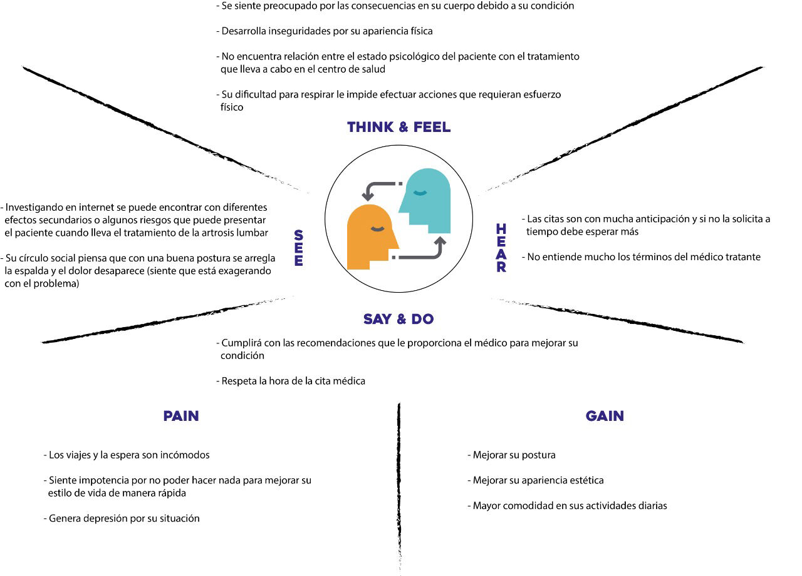

CONTEXTO

De la información recopilada, vemos que el 80% de los casos de escoliosis son determinados “idiopáticos” y de esta cifra, aproximadamente 30% de los adolescentes con esta condición tienen una historia familiar con escoliosis, además de que 1 de 3 niños con padres con escoliosis desarrollarán la misma condición.
Luego de cirugías realizadas en la columna como la cirugía de fusión espinal puede llegar a ocasionar movimiento limitado de la espalda y daño de los músculos paraespinales. El primero puede incurrir en movimientos compensatorios de los niveles adyacentes, así acelerando la aceleración; adicionalmente, el segundo puede inducir atrofia muscular e infiltraciones de grasa.
Todas estas dificultades son las que puede afrontar un paciente con escoliosis idiopática post-operación, así que buscamos darle solución a todas ellas de manera que la economía de nuestro público objetivo no se vea afectada y que los tratamientos no sean invasivos.
[1]
HANLEY, EDWARD N. JR., M.D.†; DAVID, STEPHEN M. M.D.†, CHARLOTTE, NORTH CAROLINA Current Concepts Review - Lumbar Arthrodesis for the Treatment of Back Pain*, The Journal of Bone & Joint Surgery: May 1999 - Volume 81 - Issue 5 - p 716-3
[2]
Universidad de Murcia. "Vivencias de las jóvenes diagnosticadas de escoliosis idiopática | Enfermería Global". Digital Object Identifier System. https://doi.org/10.6018/eglobal.15.4.243261 (accedido el 8 de septiembre de 2021).
[3]
G. G. Jose Luis. "Influencia de factores epigeneticos en el desarrollo de la escoliosis idiopatica del adolescente". Inici. https://roderic.uv.es/handle/10550/79362 (accedido el 8 de septiembre de 2021).
[4]
Navarrete, M. and Sellán, M., 2018. ScienceDirect. [online] Experiencia dolorosa en adolescentes tratados mediante corrección quirúrgica de escoliosisPainful experience in adolescents undergoing surgical correction of scoliosis. Available at:
[5]
Altaf, F., Gibson, A. and Dannawi, Z., 2013. Adolescent idiopathic scoliosis. [online] BMJ. Available at:
[6]
«Diagnosis & Screening of Scoliosis | Scoliosis Research Society». Accedido 1 de septiembre de 2021. https://www.srs.org/patients-and-families/common-questions-and-glossary/frequently-asked-questions/diagnosis--screening-of-scoliosis.
[7]
Altaf F, Gibson A, Dannawi Z, Noordeen H. Adolescent idiopathic scoliosis. BMJ. 2013; 346(7906): 1-7.
[8]
Cheng JC, Castelein RM, Chu WC, Danielsson AJ, Dobbs MB, Grivas TB, et al. Adolescent idiopathic scoliosis. Nat Rev Dis Prim. 2015; 1: 15030.
[9]
Suh SW, Modi HN, Yang JH, Hong JY. Idiopathic scoliosis in Korean schoolchildren: a prospective screening study of over 1 million children. Eur Spine J. 2011; 20(7): 1087-94.
[10]
Choudhry MN, Ahmad Z, Verma R. Adolescent idiopathic scoliosis. Open Orthop J. 2016; 10(16): 143-54.
[11]
Konieczny MR, Senyurt H, Krauspe R. Epidemiology of adolescent idiopathic scoliosis. J Child Orthop. 2013; 7(1): 3-9.
[12]
A. S. Vázquez-Lazarte, C. A. Berta-Benites y F. M. Runzer-Colmenares. "Frecuencia de escoliosis idiopática del adolescente en alumnos de secundaria en seis colegios de Lima Norte". SciELO - Scientific Electronic Library Online. http://www.scielo.org.pe/scielo.php?pid=S1727-558X2020000400005&script=sci_arttext (accedido el 7 de septiembre de 2021).
[13]
"Fracturas del cartílago de crecimiento (Growth Plate Fractures) - OrthoInfo - AAOS". OrthoInfo - Patient Education | American Academy of Orthopaedic Surgeons. https://orthoinfo.aaos.org/es/diseases--conditions/fracturas-del-cartilago-de-crecimiento-growth-plate-fractures/ (accedido el 7 de septiembre de 2021).
Rojas-García. "Síndrome de hipermovilidad articular". Medigraphic - Literatura Biomédica. https://www.medigraphic.com/pdfs/ortope/or-2020/or206q.pdf (accedido el 7 de septiembre de 2021).
[14]
J. W. Hernández. "La importancia del manejo emocional ante un diagnóstico clínico desfavorable". Medigraphic - Literatura Biomédica. https://www.medigraphic.com/pdfs/neumo/nt-2007/nt074g.pdf (accedido el 7 de septiembre de 2021).
Fundación Española de Reumatología. "Artrosis de rodilla: qué es, síntomas, diagnóstico y tratamiento". Inforeuma. https://inforeuma.com/enfermedades-reumaticas/artrosis-de-rodilla/ (accedido el 7 de septiembre de 2021).
[15]
E. D. DC. "Causas de dolor en la columna lumbar". Spine-health. https://www.spine-health.com/espanol/anatomia-de-la-columna-vertebral/causas-de-dolor-en-la-columna-lumbar (accedido el 7 de septiembre de 2021).
[16]
M. Losada. "QUE ES LA FISIOTERAPIA - Rehabilitación Premium Madrid". Rehabilitación Premium Madrid. https://rehabilitacionpremiummadrid.com/blog/miguel-losada/que-es-la-fisioterapia/ (accedido el 7 de septiembre de 2021).
[17]
Mayo Clinic. "Dolor de espalda - Diagnóstico y tratamiento". Mayo Clinic - Mayo Clinic. https://www.mayoclinic.org/es-es/diseases-conditions/back-pain/diagnosis-treatment/drc-20369911#:~:text=Analgésicos%20de%20venta%20libre.,según%20las%20indicaciones%20del%20médico. (accedido el 7 de septiembre de 2021).
[18
N. R. Lluch y J. M. Acevedo-Echevarría, "Deformidad de la caja torácica", Scielo, vol. 70, n.º 4, 2018.
[19] T.-Y. Wang, J.-L. Pao, R.-S. Yang, J.-S. R. Jang, y W.-L. Hsu, «The adaptive changes in muscle coordination following lumbar spinal fusion», Human Movement Science, vol. 40, pp. 284-297, abr. 2015, doi: 10.1016/j.humov.2015.01.002.
This web page was built with Mobirise theme